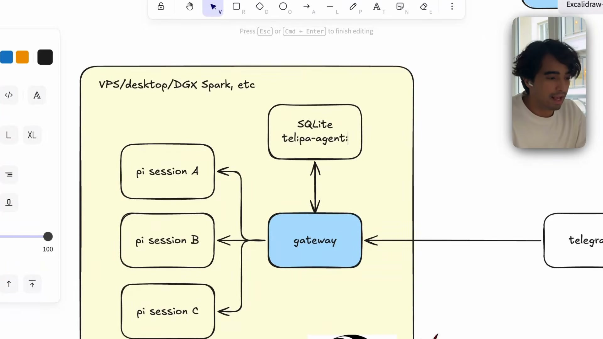
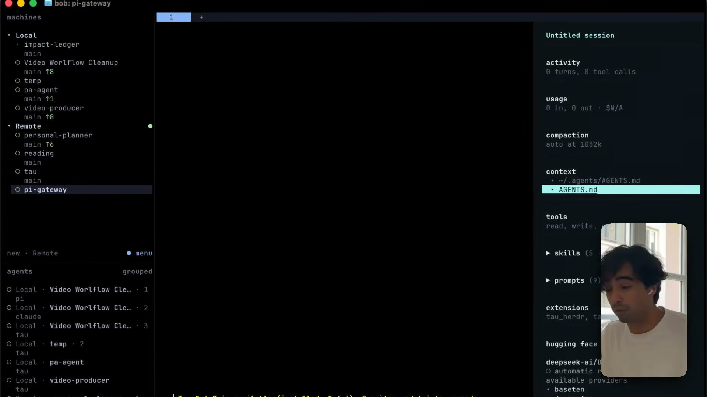

Executive summary
The gateway is the transport; the workspace is the agent
Alejandro AO's Hugging Face tutorial assembles two specialist
agents on an always-on machine. One workspace acts as a personal
assistant with Google Workspace access. Another acts as a
researcher with Firecrawl skills. Pi or its Python port Tau runs
the agent loop, while pi-gateway receives Telegram
messages and routes each conversation back to the correct Pi
session.
The strongest architectural lesson is separation of concerns. Telegram is only a channel. The gateway authenticates a user, maps a chat to a session, and starts or resumes the runtime. The selected directory supplies local instructions, skills, files, and working context. Pi's JSONL session remains the source of truth for conversation history; SQLite stores the mapping needed to find it again.
-
Specialization is filesystem-scoped. Each
agent is a directory with its own
AGENTS.md, project skills, tools, files, and sessions. - The gateway is deliberately thin. It connects Telegram to Pi RPC, records the session pointer, and keeps the process available in the background.
- Durability comes from two stores. SQLite owns channel-to-session routing; Pi's append-only session files own agent history.
- Model choice is per gateway. Different bots can use different providers, models, thinking levels, workspaces, and skill sets.
- The demo is a prototype, not a full dots clone. Scheduling, proactive work, approval policy, multi-channel connectors, observability, backups, and hardened secret management remain additional engineering.
One-sentence model
A channel message becomes a durable agent turn by resolving
channel identity → gateway instance → workspace → Pi session.
What the tutorial actually builds
A reachable specialist, not an autonomous organization
The video opens by comparing the project with OpenAI dots, which OpenAI describes as always-on agents with their own cloud computers, connected apps, background work, permissions, and approval controls. The tutorial implements a smaller and useful subset: self-hosted specialist workspaces that can be messaged from Telegram and resumed across turns.
Demonstrated
Two agents, distinct directories, per-agent instructions and skills, Telegram bots, an allowlisted user ID, model selection, local session routing, background startup, and conversation continuity.
Discussed as future work
Scheduled inbox triage, proactive research, WhatsApp and other channels, more tools, and deeper gateway extensions. These are ideas, not features proven in the demo.
That boundary matters. “Always on” here means the process is available whenever a message arrives. It does not yet mean the system continuously invents and executes work without a trigger.
Runtime architecture
Five layers turn a phone message into an agent turn

| Layer | Owns | Does not own |
|---|---|---|
| Telegram | Chat transport, bot identity, user and thread IDs | Agent instructions, tools, or durable reasoning history |
| pi-gateway | Authentication gate, routing, lifecycle, streaming | Business logic or the model's internal agent loop |
| SQLite | Channel key, Pi session ID, Pi session file path | The full conversation as the source of truth |
| Pi or Tau | Model calls, tools, events, compaction, session history | Channel-specific UI or Telegram polling |
| Workspace | Persona, project context, skills, files, local scope | Cross-agent governance or organization-wide policy |
Agent composition
A directory becomes the unit of specialization
In the demo, each specialist is not a large configuration object in a central orchestrator. It is a directory. The personal assistant directory contains instructions describing its role, Google Workspace skills, and the files it may use. The research directory has a different instruction file and web-research skills. Starting Pi in that directory makes those local resources the agent's operating context.

Instructions
AGENTS.md describes role, responsibilities, and
workspace-specific behavior.
Skills and tools
Skills provide procedural knowledge; executable tools provide capabilities such as Gmail, Calendar, Drive, or web search.
Durable state
Files and JSONL sessions remain inspectable on disk, making the agent easier to debug than an opaque hosted thread.
Pi's documentation confirms progressive skill loading: metadata
is advertised first, while the full SKILL.md is read
when the task matches. Tau follows the same small-layer design
and separates its provider-neutral harness, coding environment,
and terminal frontend.
Session routing
Resume the same agent context without keeping a terminal open
For Telegram, the current repository derives a routing key from
the chat and optional thread/user identity. SQLite stores that key
with Pi's sessionId and session-file path. When a new
message arrives, the gateway starts Pi in RPC mode with the stored
session file. A /new command creates a fresh session;
other commands expose status, switching, compaction, model
selection, cloning, queuing, and export.
Why the split is useful
SQLite can be rebuilt or migrated as routing metadata, while Pi history stays in its native append-only format. Channel integration can evolve without rewriting the agent's memory model.
This also reveals the clean extension point for additional channels. A WhatsApp, Slack, or email adapter should normalize an incoming event into a channel identity and message, then reuse the same session service. It should not duplicate the agent loop or store a second authoritative history.
Implementation sequence
The tutorial's shortest path from workspace to phone
- Prepare an always-on host such as a VPS, home computer, or local inference box, and install/authenticate Pi or Tau.
- Create one directory per specialist and add its instructions, skills, tools, and project-local files.
-
Install
pi-gatewaywithuv tool installand initialize an instance inside the intended workspace. - Create a Telegram bot with BotFather, then configure a distinct token and an allowlisted Telegram user ID.
- Select the working directory, provider/model, and thinking level for that gateway instance.
- Start the background process, inspect status and logs, then message the bot to create or resume a Pi session.
- Repeat initialization in another directory for each additional specialist and use a distinct Telegram token per instance.
The repository recommends one systemd service per bot for production. A simple background command is convenient for a demo, but an external supervisor provides restart policy, boot startup, structured ownership, and better failure visibility.
Security boundary
Self-hosting increases control and responsibility at the same time
What the demo gets right
It allowlists one Telegram user ID, disables group chats by default, keeps the routing database local, separates agents by directory, and gives each gateway its own bot token.
What production still needs
Secret storage, token rotation, least-privilege OAuth scopes, tool approvals, audit events, backups, patching, network hardening, retention policy, and tested recovery.
Do not copy the screen-share workflow literally.
Bot tokens and user identifiers are credentials or sensitive routing data. Keep tokens out of screenshots, shell history, repositories, and shared logs. Prefer environment variables or a secret manager, and rotate any token that is exposed.
The most consequential tools in this demo can read email, create calendar events, upload Drive files, and potentially send messages. Authentication alone is not an action policy. A serious deployment should classify tools by consequence and require confirmation for outbound communication, destructive changes, permission edits, financial actions, or sensitive-data sharing.
From demo to durable service
Add an operations layer before adding more autonomy
The tutorial makes specialization and reachability look simple, because those pieces can be simple. Reliability becomes difficult when the agent is permitted to act while nobody is watching. The next investment should be governance and observability, not more personas.
Supervision
Run each instance under systemd or another supervisor with restart limits, health checks, resource quotas, and clear log locations.
Traceability
Correlate channel message, gateway route, Pi session, model, tool calls, approvals, output, latency, and cost in one trace.
Recovery
Back up both SQLite mappings and Pi session files, verify restore procedures, and document how moved config paths affect derived database locations.
Policy
Enforce tool and data boundaries outside prompts. Treat workspace instructions as behavior guidance, not a security sandbox.
Evaluation
Test each specialist on representative tasks, tool failures, ambiguous requests, adversarial content, and approval paths.
Scheduling
Add idempotency, time zones, quiet hours, retry budgets, and escalation before turning a manual bot into a proactive agent.
Platform interpretation
This maps cleanly to Master Agent, Sub-Agent, Skill, and Tool boundaries
For an enterprise agentic platform, the tutorial offers a useful decomposition but not a complete multi-agent design. A workspace resembles a specialist or Sub-Agent package. Its instructions define role and operating context; skills encode reusable procedures; tools provide executable capabilities; sessions hold work history. The gateway is an interface adapter and runtime router, not the Master Agent.
Master Agent
Chooses a specialist, coordinates shared goals, resolves handoffs, and owns cross-agent policy and completion state.
Specialist workspace
Owns one bounded responsibility, local context, skills, allowed tools, test cases, and an explicit escalation rule.
Gateway
Normalizes channels, authenticates identity, restores sessions, streams progress, and forwards commands to the runtime.
A business analyst should be able to describe a specialist in business terms: responsibility, accepted inputs, expected outputs, available knowledge, allowed actions, approval points, success criteria, and escalation. Platform code can then compile that contract into workspace instructions, skill references, tool scopes, and evaluation cases.
My take
The design is small enough to understand, which is its main advantage
The system is compelling because every important boundary is inspectable: directories, Markdown instructions, skill folders, JSONL sessions, one SQLite table, a gateway process, and ordinary Telegram bots. That makes it a strong learning architecture and a practical personal setup.
Its simplicity should not be confused with production readiness. The demo's strongest idea is not that anyone can recreate a commercial always-on agent in twenty minutes. It is that channel access, agent identity, workspace context, session durability, and tool capability can remain separate modules. Preserving those boundaries makes later additions such as approvals, evaluation, scheduling, and multi-agent orchestration much easier to reason about.
Video map
Where each idea appears
- 00:00 — Open-source dots concept and demo.
- 01:55 — Always-on host and agent directories.
- 03:49 — Skills and Google Workspace access.
- 05:20 — Personal-assistant test in Pi/Tau.
- 07:12 — Gateway and session-routing architecture.
- 11:42 — Install and initialize pi-gateway.
- 12:43 — Telegram bot, allowlist, model, and workspace.
- 15:03 — Start the gateway and chat with the agent.
- 16:56 — Add a second research specialist.
- 19:09 — Recap and proposed extensions.
Sources and limitations
What this article is based on
- Build Your Own Open-Source Dots with Pi and Telegram by Hugging Face. This is the primary tutorial and source of the included frames.
- pi-gateway repository for current installation, security, lifecycle, session mapping, RPC, and Telegram command details.
- Pi documentation and its skills guide for the underlying agent runtime and progressive skill-loading behavior.
- Hugging Face Tau for the Python harness architecture referenced in the video.
- Google Workspace CLI for the Drive, Gmail, Calendar, and related agent skills used by the personal-assistant demo.
- Introducing dots for the hosted product whose always-on specialist model inspires the tutorial.
YouTube supplied an auto-generated English transcript. Technical names, commands, and architecture claims were checked against the linked repositories and documentation. This summary did not deploy the gateway, inspect the presenter's private configuration, benchmark models, or verify Google Workspace actions. The article therefore distinguishes demonstrated behavior, repository-backed behavior, and proposed future extensions.